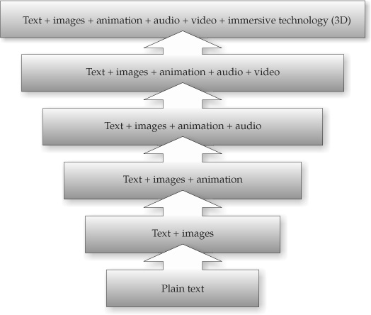
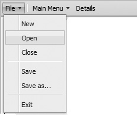

In the previous chapters, we have explored windows, dialogs, and a variety of form fields. There are a few more Web interface items that can be created or improved with JavaScript, so we take some time in this chapter to discuss those that have been missed. We will begin the discussion by addressing how we might go about adding JavaScript into a Web page or application. During this discussion, we will see two schools of thought—one that works upward from markup and one that works downward from script. After understanding these approaches, we will survey a number of interface elements we might employ. However, we should note that because the range of interface elements is quite vast, we will not present all possible user interface constructs but illustrate approaches and emphasize those that have standard tags and APIs defined under HTML5.
How JavaScript is employed interface-wise in a Web site or application will depend greatly on the type of application or site we are dealing with and the value that such techniques will provide. We might aim to use only small amounts of JavaScript that improve experience, or we might aim to build the entire site or application in JavaScript and move far away from traditional pages and architecture.
If at one extreme, we completely re-architect our application to rely on JavaScript, it will utterly fail if JavaScript is off or the browser does not support the particular API we rely on. Conversely, we might be quite conservative and design our site or application to use very little JavaScript—but then again, what’s the point of reading this book if you are going to take that route?
Pragmatic Web developers usually don’t opt for all-or-nothing approaches to technology use. They likely reason, even when being conservative, that they should provide a richer interface or more functionality with JavaScript to those who can handle it, but simply not require it for those who can’t. Users will have a more pleasing or powerful experience with JavaScript-enabled technologies available, but they will not be locked out from the site or application without it either. This idea, starting from the most basic technologies and layering more complexity on top of that based on user capabilities, is called progressive enhancement.
If we approach design with the JavaScript-required or at least the highly recommended point of view, we believe that the site or application functionality and experience really are best with the latest technology. However, acknowledging the simple fact that ideal conditions do not always prevail, we might opt to reduce functionality in some situations to some acceptable level or at the very least provide useful information if the user’s browser does not support the functionality. Starting from complexity and reducing or failing well is typically termed graceful degradation.
To illustrate the range of choices and what end of the spectrum we start from, first consider the range of presentations we might enjoy online:

Such a range would also hold for the technology used to implement such a look:
NOTE If you have some aversion to seeing Flash in the diagram, simply understand that it is meant to indicate the need for some binary technology, often for multimedia. Insert whatever term makes you comfortable, but it was the shortest way to represent that.
What we are doing here is illustrating the rise in complexity, as the combinations might vary outside our progression, and other complications such as frames might be introduced. The point here is simply that we increase complexity as we layer on more technologies.
The range varies along numerous parameters. For example, if we consider the network, we might range from disconnected from the network, to the network connected at low speeds and high latency, to a very fast connection with low latency. Of course, once connected, we might imagine that the consistency of the network conditions may vary:
In Chapter 15, when we discuss Ajax, we’ll see that it is quite important to understand how to communicate using JavaScript and respect all the various challenges we may encounter during communication.
The actual content itself in a site or application ranges from static content presented to all users, to customized content on a per-user or per-group basis, and even to interactive or participatory content:
Continuing along these lines is our Web application interface, a traditional read—that is, a read-and-click or form-fill affair—or a direct manipulation interface where objects are selected, dragged, and combined.
Now that we have seen some of the vast range of decisions, we reiterate that progressive enhancement is the idea of adding features and technologies to a site that corresponds to increased capabilities of visiting end users. Similarly, the idea of graceful degradation is that you start with a technically sophisticated and feature-rich site and degrade to the capabilities and features the user is capable of handling. Both ideas are quite similar to adapting to the conditions of the user. In the case of progressive enhancement, we build up from basic features to more advanced, while in the case of graceful degradation, we tend to start with a high fidelity execution and reduce down.
The choice between starting from basic features and adding on or starting with the desired high-end experience and seeing what can fall away is somewhat of a philosophical one and tends to be based on your desire to be inclusive or exclusive. However, regardless of the selection, there will be different experiences for end users, and the reality is that it is not possible to service everyone with the same experience in an acceptable manner. JavaScript developers won’t easily satisfy those with a decade-old browser and computer technology, but neither should they aim to please only those who upgraded to the latest releases just yesterday.
The choice between progressive enhancement and graceful degradation will depend much on the type of application or site being built, as well as on the cost/benefit provided by the amount of flexibility that is desired. Yet more often than not, in the evolution of an existing Web site or application, progressive enhancement will likely be the philosophy of choice. It might be thought, then, that for a brand-new application built in the HTML5 era, graceful degradation is the preferred philosophy. However, that may not be the case, as there will always be known limitations unless you degrade to the oldest forms of technologies. This begs the question, “Why not approach things from the other direction for the sake of simplicity?” The trade-offs and limitations alluded to will all become clear as we implement examples, so let’s get started by exploring a simple example of progressive enhancement.
The idea of progressive enhancement, as previously mentioned, is to layer technology on top of some other base technology. As an example of progressive enhancement, we will layer JavaScript on some HTML markup to take a static document and make it more interactive.
Imagine, as an example, that we had a large volume of content we wanted to show a user. Obviously, we might break it up into sections with markup, like so:
Now this won’t look terribly motivating:
If we had a lot of content, it might even be a bit overwhelming to the user. Instead, we might like to make it so that we show and hide when the user clicks on each heading so they can focus on the content in that particular section. In other words, we would use JavaScript to create a simple accordion widget.
To make our simple accordion, first we mark it as an accordion by putting some attribute—either a class name, an id, or even a data-* attribute—on the element(s) we want to enhance:
Marking it in some manner makes it both easier to script and style.
Next, we make the heading links since we are going to bind some interactivity to them:
Obviously, we don’t have to do this because we could put click events on them with JavaScript, but remember that, following progressive enhancement, we are trying to layer from simple to complex, and the general way we make something interactive in HTML is with a link.
Next, we would need to style the link and hide the content under it. This puts a little style in place and hides the content until it is revealed later on. We don’t really need JavaScript to do this, just a little CSS:
At this point, our primitive accordion looks like some clickable headings with nothing under them:
Now, on page load we find all the links in the accordion and wire up a function to each. The idea is that when a heading is clicked, we will hide any content currently being shown. We’ll indicate this by setting a class called “shown.” We’ll set the display property of this content to none and then remove the class name since it isn’t shown. Next, we will get the content near the clicked link and show it by setting its CSS display property and then toggle the class to indicate that it is currently visible. We also toggle the state of the links by adding and removing a class called “open.” This will then add and remove a symbol indicating the state of the content. The code to do this isn’t terribly long and is shown here:
The accordion then works roughly as shown in Figure 14-1.
Figure 14-1 Very simple progressive enhancement accordion in action
ONLINE http://javascriptref.com/3ed/ch14/accordionsimple.html
Obviously, we made some significant simplifying assumptions here in terms of the structure of the markup in the accordion widget and the availability of useful DOM methods such as nextElementSibling. Further, we might want to allow an ability to return to an all-closed state or maybe for multiple elements to be open. Finally, we might like to improve the look of the example. Rather than re-creating existing code, we remind readers that we are showing the approach of layering on top of markup.
There are plenty of existing JavaScript libraries that take this approach and address all the various cases we might be interested in. In the following example, shown in Figure 14-2, we use a simple jQuery accordion widget to get a much richer look:
Figure 14-2 jQuery’s accordion widget utilizes progressive enhancement.
ONLINE http://javascriptref.com/3ed/ch14/accordionjquery.html
At this point, you should understand the idea of taking markup and style and using JavaScript to enhance the user’s experience. Before exploring some aspects of HTML5 that lend themselves to building interface elements, let’s explain an alternative approach that is more dependent on the availability of JavaScript.
A quite different approach would be to use JavaScript for everything, building an entire application out of code. In this case, the HTML is pretty much just a framework and may have no body content at all or just empty <div> elements representing the sections of the application. Taking this approach, our accordion example might look like this:
Be careful when marveling at the beauty of separation here. The style sheets are still there, just linked—and while we see no markup, we must generate the HTML and content dynamically to make the accordion widget. Since that content must live somewhere, we might hold the configuration of the widget in a simple JavaScript or a JSON structure:
Given our configuration, we would then go and create the accordion dynamically:
The page that follows would be the same, as we have created the same kind of markup as before.
ONLINE http://www.javascriptref.com/3ed/ch14/accordiongraceful.html
While there is purity to this all-JavaScript approach, looks can be a bit deceiving. First, we need to let the user know what happened in the case that JavaScript is not available. This could be handled fairly simply with the <noscript> tag, like so:
Of course, this means we require JavaScript for functionality. That might be a legitimate requirement for an internal or very advanced application, though likely a bit troubling for a public-facing, content-driven Web site. Your choice of approach should be driven by this thought.
Unfortunately, many developers seem to get attached to one way or the other being better. Usually there is some emphasis on the purity of separation between markup, style, and script. The reality is that neither approach wins here. Consider, in this case, that we have buried some markup into both our configuration structure as well as the code. You might, then, exclaim that if we would use templates we would avoid this problem of intermixture. The truth is you can never completely separate things. We can have implied logic in the structure of our markup, implied or explicit logic in a template, special naming conventions that imply meaning, or we can bury markup in our code, and on and on. Fundamentally, all the technologies touch; they have to, as there simply is no way not to, except in the most contrived cases. We present this point because we don’t want readers to think that we declare a winner here with our upcoming examples, which generally employ progressive enhancement. Understand that we do this because we want to illustrate the new interface ideas that are dominantly based upon HTML5 tags. By showing these tags, we hope readers will become more familiar with them, but the approach to use them can be either progressive enhancement or graceful degradation.
A primary motivation of the HTML5 effort has been to support the development of Web applications. The HTML markup language itself has even been modified to support new elements that will make the creation of applications far easier. These new tags, attributes, and associated APIs can be employed to make application-style interaction or to act as hooks for JavaScript to bind to add such interaction. We have seen a number of these already in Chapter 13 when exploring the new form elements introduced by HTML5. In this section, we survey other user interface–focused features of HTML5 that are beyond standard form fields.
One of the most interesting HTML5 elements for interface creation is the revived menu element. Traditionally, this element was supposed to be used to create a simple menu for choices, and most browsers simply rendered it as an unordered list:
Under HTML5, the menu element has been returned to its original purpose. A new attribute, type, is introduced that takes a value of toolbar, context, or list (the default). This example sets up a simple File menu for a Web application:
Using CSS and JavaScript, this menu might render like so:

Again, this is completely speculative and is just meant to illustrate a possibility.
The menu element may contain not just links, but other interactive items, including the newly introduced command element. This empty element takes a label and may have an icon decoration as well. The command element has a type attribute, which may be set to command, radio, or checkbox, though when radio is employed there needs to be a radiogroup indication. A simple example here with the repurposed menu element should illustrate the possible use of this element:
Such a menu might look like the following:
HTML5 makes it simple to add context menu items to the built-in browser context menu. Control is quite granular; in fact, it is even possible to add different menu items based on where the context menu is activated.
To demonstrate, let’s make a simple menu example using HTML5’s modified <menu> tag. First, we make sure that our main <menu> tag has an id attribute and a type set to “context”:
Within this tag, we include various <command> tags for individual items and then consider using submenus enclosed in <menu> tags themselves:
Once we define our menu with markup, we then choose the element where the context menu items should appear and place the contextmenu attribute on that element. It is possible to put the contextmenu attribute on the <body> tag if the context menu should appear anywhere on the page. The attribute should be set to the id of the menu:
Each <command> also should be hooked up to events with normal JavaScript onclick event handlers:
Now our newly defined commands would appear in the browser’s context menu when it is activated over this section of the Web page. It might look something like this if your browser supports the syntax:
ONLINE http://www.javascriptref.com/3ed/ch14/contextmenu.html
At the time of this book’s release, no browsers support this exact syntax. However, Firefox has implemented a very similar structure that uses <menuitem> tags instead of <command> tags for the menu items. The <menuitem> tag is not in the HTML5 specification currently, but there are current discussions about adding it.
ONLINE http://www.javascriptref.com/3ed/ch14/contextmenu-ff.html
Obviously, there is no preexisting way to add items to the browser’s context menu if it does not support these new tags. However, we can get a similar effect if we hide the browser’s context menu and make our own menu using standard tags and CSS. We illustrate that idea now because it is quite likely that will be the method you’ll employ—or your library will— given browser support.
To make our own context menus, we need to first hide the browser’s context menu. To do this, simply capture the oncontextmenu event on either the document itself or on a particular element and return false, like so:
Next, we want to display our own context menu. There are many ways to achieve this goal using standard tags and CSS with some JavaScript to glue it together. First, we build the structure in the HTML. In this case, we will use <ul> and <li> tags to indicate the menus and items. These tags are convenient since they allow a logical way to add submenus. The class names are important since we will be handling the styling ourselves:
The CSS shown here is used to style the menu:
There are two important things to note from the CSS. The first is that the main menu and the submenus are hidden by default. They will be made visible through the JavaScript at the appropriate time. The second important thing is that there is a special hover-related class. This class will be turned on whenever we move our pointer over a menu item; therefore, the style of the item will change.
Now that we have created the structure and style of our context menus, we need to hook them up using JavaScript. The first thing is to modify the oncontextmenu event handler. Instead of simply returning false, we also need to calculate and set the position of our context menu and then unhide the box:
Next, we need to loop through all of the menu items and set event handlers for onmouseover and onmouseout. This will allow us to set and remove the hover class as appropriate:
With everything in place, when right-clicking over the appropriate area, we see our custom context menu instead of the browser’s built-in menu:
ONLINE http://www.javascriptref.com/3ed/ch14/contextmenu-divs.html
Now, with a little thought, we should be able to take the HTML5 syntax and patch it to use the JavaScript-based menus if the browser does not support the syntax. This approach would allow us to write our context menus using the HTML5 standard–based tags, but convert those tags into the list-based context menus in the previous example if they are not supported.
To create this patch for the context menu, we need to first check if the current functionality is supported. This is tricky since some browsers support the element but don’t implement it. In this case, the type property is not implemented, so we check support for that as well:
If this ability to detect for support and then use script intrigues you, take a look at Chapter 16, which has much to say on the subject.
Now, if we determine that we need to show a generated menu, we employ our translateMenu() function, where we convert all of the <menu> tags into <ul> tags and the <command> tags into <li> tags. This is done in a recursive manner so that we can ensure that submenus are added properly and with the appropriate class name. Finally, we remove the unsupported markup and replace it with the generated markup. We need to make sure, though, that when we translate the elements we keep the id attributes intact. This allows our event hookups to work with the new elements:
ONLINE http://www.javascriptref.com/3ed/ch14/contextmenu-bc.html
Hopefully, assuming the shifting sands of browser technology don’t undo our hard work, our custom context menu will be displayed regardless of a browser’s support for the HTML5 syntax. Of course, as we have previously mentioned, in this chapter our approach is meant to be illustrative, rather than perfect production quality, and will illuminate what is going on in the user interface package you pick or allow you to write your own.
In the past, drag-and-drop capability was a difficult endeavor to handle in JavaScript applications. Many people went to external libraries to help implement this functionality. It was certainly possible to have it in a Web page, but it did require a lot of code, even though it might be hidden in a library.
The times have changed, and one of HTML5’s welcome additions is this new drag-and-drop functionality. Many events specific to it have now been included in the specification and implemented by the major browsers. In addition, a couple of attributes have been added to further simplify the process. Finally, the browser manages the dragging itself, so it is no longer necessary to modify CSS positions to mimic dragging.
HTML5 adds a few new attributes that apply to drag-and-drop coding. The first is draggable and can be placed on any element that can be dragged. When draggable is set to true on an element, the user will be able to drag it around the page, though it will not be moved on drop until we hook it up to the drag-and-drop events seen shortly. In most supporting browsers, simply setting draggable=“true” will be enough to drag a shadow of the object around the page, but in Firefox it is currently necessary to set the data that will be dragged via the DataTransfer object. We will look at this object and details later in this section. In addition to setting the draggable attribute, it is helpful to the user to set the cursor on the object to move so that there is an indication that the object can be dragged:
ONLINE http://www.javascriptref.com/3ed/ch14/drag.html
NOTE HTML5 also defines a dropzone attribute. We do not discuss it significantly since, so far, it is not supported and because there seems to be some concern about its future.
When looking at this example, it is fun to see that the object can be dragged all over the page but that when the mouse is released, the draggable copy disappears and only the original remains in the normal place. In order to make the drag-and-drop code functional, event handlers must be added in. There are several available handlers, and they are listed in Table 14-1.
Table 14-1 HTML5 Drag Event Summary
As we can see, some of the events apply to the item being dragged and some apply to the elements that are being dragged over. It is not necessary for the item to be dragged over to be a drop zone. It may be desirable to style an element as not a drop zone if the user carried the dragged item to the region. The ondrag and ondragover event handlers fire continuously as the drag is occurring. It is not typically necessary to have events that fire so rapidly, so use these with caution. With the other events available, most functionality can be handled without these handlers. However, at the time of this book’s release, it is necessary to capture the ondragover event and prevent the default action in order for the drop event to fire.
In this example, we hook up the drag-and-drop events and modify the style based on the dragging action. When the object is dropped, we check to see if it is in a valid region and then display an alert message for the user:
ONLINE http://www.javascriptref.com/3ed/ch14/dragdrop.html
Although this example is improved from the previous one in its interactive feedback, it still doesn’t allow us to move an item from one location to another. The DataTransfer object is necessary to complete our drag-and-drop operation. In addition, Firefox requires DataTransfer to begin the dragging process. It is possible to access the DataTransfer object through e.dataTransfer within all of the drag-and-drop events previously discussed. The draggable object sets the dataTransfer.effectAllowed property. This property is most commonly set in the ondragstart event and can be set to “none”, “copy”, “copyLink”, “copyMove”, “link”, “linkMove”, “move”, “all”, and “uninitialized”. On the other side, dataTransfer.dropEffect can be set in the possible drop zones. This can be set to “move”, “copy”, “link”, or “none”. This indicates what should happen to the object being dragged when it is dropped in this zone. These attributes provide visual clues to users to what will happen when they drag-and-drop something. They do not restrict any action.
The dataTransfer.getData(format) and dataTransfer.setData(format, data) can be used to move data during a drag-and-drop operation. The format should be set to the mime type of the data. With this addition, we see that the drag-and-drop capability now works in Firefox.
Here we see a brief example of the transfer:
ONLINE http://www.javascriptref.com/3ed/ch14/dragdropeffect.html
Using these ideas, it is trivial to implement a draggable list:
ONLINE http://www.javascriptref.com/3ed/ch14/draglist.html
Now we put those properties to use with files. A file can be dragged from your computer onto a Web page. If the element that is dropped is set up to handle it, the page can read the file without going to the server. The DataTransfer object has a files property that holds a FileList containing files dropped in the region. The following example, displayed in Figure 14-3, shows the basics of how drag-and-drop uploading might be accomplished:
Figure 14-3 Drag-and-drop file uploads

ONLINE http://www.javascriptref.com/3ed/ch14/file.html
There is more to HTML5’s drag-and-drop functionality; unfortunately, given the volatility of what we haven’t covered well—namely changes to the data transfer interface and native dropzone support—we are going to have to use the “permanency of ink on paper” excuse again and direct readers to consult the latest information that can be found online.
Readers should be highly familiar with the “click-to-edit interface” idiom from desktop operating systems that allow file renaming in such a manner. In this click-to-edit scenario, the user selects the object of interest and typically clicks or double-clicks the object to invoke editing. The presentation changes to show that the user is in edit mode, often by modifying the cursor to an insert indicator such as an I-beam. Presentation changes may also include stroking or highlighting the range of the content to be edited:
After the editing occurs, the changes are committed simply by blurring the edit region, usually by clicking some other place in the interface.
In simple applications, the changes are immediately saved, though it is possible not to commit the changes immediately but instead “dirty” the content. In such a situation, changed content typically will be indicated with a different style such as italics, and a Save button will be activated elsewhere to perform the actual change commit.
The basic idea for implementing such a facility would require first indicating what would be editable, both visually and programmatically. Programmatically, this might include defining a class name:
You could also use a data-* attribute:
Then you would use JavaScript to find the elements in question and bind an edit() function that would take the contents and replace them with a form field to edit them and, on blur, return them back:
ONLINE http://javascriptref.com/3ed/ch14/clicktoedit.html
While this is easy enough to accomplish in raw JavaScript, HTML5 has codified the initially proprietary contenteditable attribute from Internet Explorer as standard. Simply setting this attribute directly
or via code makes the content directly editable:
While setting an element as editable is useful, if we use the newer HTML5 approach we actually can richly edit the content when we are in the editing mode. For example, if we enter editing mode and then select some content with our pointer, we can issue the following method call:
We can change the highlighted content in a WYSIWYG manner to the italic style. If we view the HTML, we see that it just put an <i> tag around the effected content. The execCommand() method allows us to perform a number of WYSIWYG editor actions such as changing color, style, background, and more. It also allows us to perform common editor commands such as undo, redo, and cut. The following example, also shown in Figure 14-4, should give you a flavor of the features available:
Figure 14-4 Built-in rich text editing example
ONLINE http://www.javascriptref.com/3ed/ch14/contentEditable.html
This particular API is quite involved, and we mean here to introduce it so that readers are aware of the possibilities, but we warn that at the time of this edition’s writing it was not well formalized or finished.
HTML5 provides a number of features to reveal content on demand. Using standard JavaScript we might reveal content that is buried in markup simply by changing the CSS visibility property or the display property, like so:
HTML5 has gone a step further and introduced a simple attribute hidden whose presence indicates that an object should not be displayed. If we change the corresponding property to true or false, we can hide or show the object, as shown here:
If we are looking to relate the showing and hiding of content, HTML5 provides the <details> tag, first introduced in Chapter 13, which will distill enclosed content to whatever is found in its <summary> tag:
The details element has one useful property (open) that contains a Boolean value that indicates whether the summary content is shown or not. We can both get and set this property to control the state of the element:
ONLINE http://www.javascriptref.com/3ed/ch14/details.html
As we wind down this chapter, we expose two more elements that may be useful in our next topic. Chapter 15 discusses Ajax, which allows us to communicate with the server using JavaScript. However, once we start making network calls, we will find that letting users know what is going on becomes more important. Fortunately, letting users know about status is becoming much easier, as two fairly similar elements have been introduced in HTML5 to show the current status of something. First up, the meter element defines a scalar measurement within a known range, similar to what might be represented by a gauge. The following example is a reading of velocity for some fantastically fast space vessel:
The value can be updated simply through JavaScript:
ONLINE http://www.javascriptref.com/3ed/ch14/meter.html
Slightly different from meter is the progress element, which defines the completion progress for some task. Commonly, this element might represent 0 to 100 percent of a task to be completed, such as loading:
Again, this element can be easily updated through JavaScript:
ONLINE http://www.javascriptref.com/3ed/ch14/progress.html
There are certainly more interface widgets that we did not cover, but those would be ones that we would have to create dynamically with JavaScript. Our aim here was to show the interface features and APIs that HTML5 and other APIs are bringing to the browser. If our observation is correct, over time, more and more interface constructs will be brought natively to the browser, which will both eliminate the need for certain aspects of JavaScript libraries and continue to blur the line between desktop application interface design and Web application interface design.
The difference between Web applications and regular applications is quickly disappearing. The interface conventions and permissions of the desktop are now becoming available via JavaScript. As this edition goes to print, we see APIs that allow for camera control, file system access, device orientation, full-screen display of content and even more being proposed weekly. This chapter first attempted to present how we might add such interface ideas to an application, either by enhancing markup or creating it via code. We believe strongly that the declarative markup approach will not be deprecated any time soon, particularly as HTML5 introduces numerous APIs that allow complex interactions such as context-sensitive commands, drag-and-drop capability, rich editing, content on demand, and more. Obviously, the interface is not enough to make a rich Web application, so in Chapter 15 we discuss the use of JavaScript communication technology—generally dubbed Ajax—to interact with server-side programs.